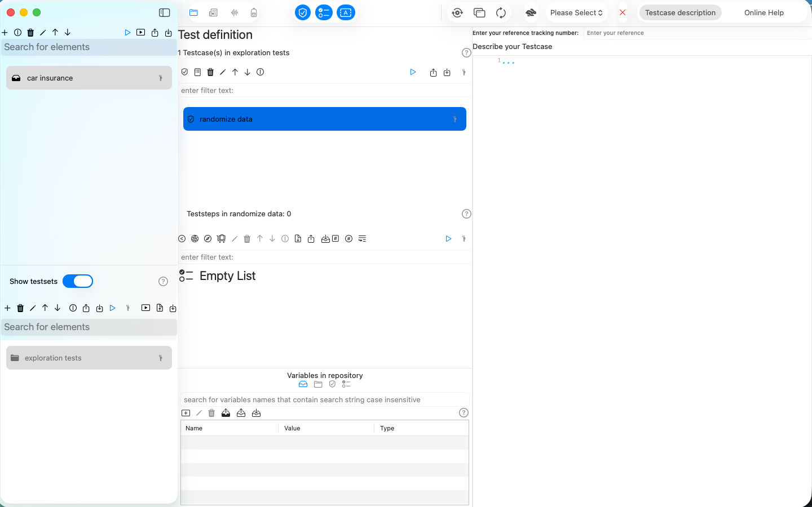
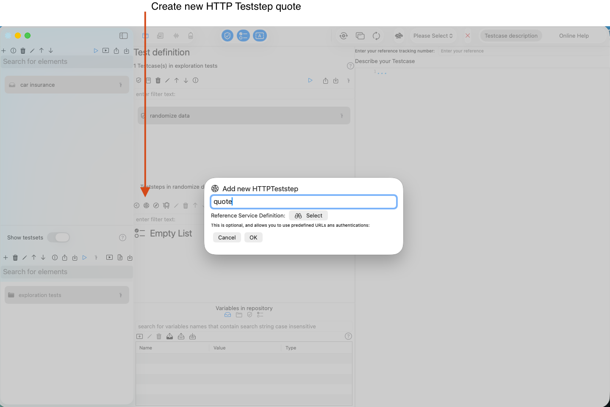
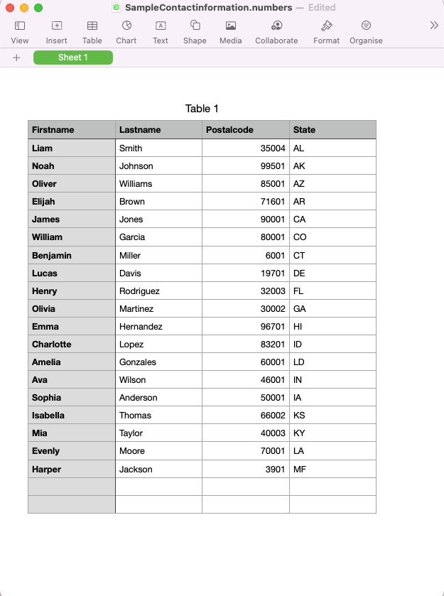
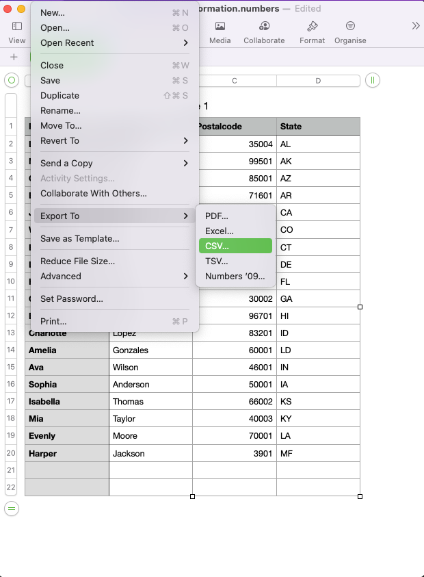
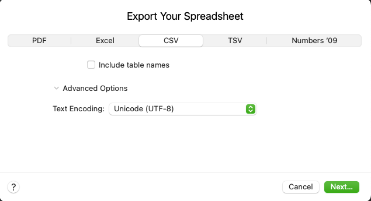
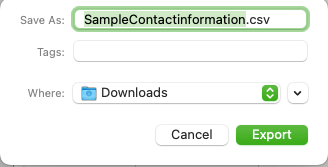

Tutorial: randomize tests
Overview
APIJockey TEST supports variables to use data other than static request content for your tests.
Tests with static data tend to lose their ability to find defects. They found some in the past, but won't find new ones and run the risk to get blind for regression.
You have several options to use variable and random data in your requests. This tutorial walks through each of these options in this order:
- create an HTTP request with a number of static fields
- replace static request data by variables
- use randomized address data
- use randomized dates
- use random personal data
- use a random Vehicle Identification Number
By the end of this tutorial most of your data will be randomized. As a result, each time you run the testcase, new data will be used. If there are bugs in your or your colleagues' implementation, changes are higher that we'll find them.
Our request is a simplified car insurance quote and buy kiosk where we will use these data to get a quote and buy insurance as a second step.
We will create our Test definition hierarchy
- Repository with name Car insurance
- Testset with name exploration tests
- Testcase with name randomize data
as a preparation work to keep things organized. You should get this test definition hierarchy:

Try to create it yourself. If you feel unconfortable, follow our tutorial in Create a HTTP Teststep.
We will create three teststeps in the first place
- an HTTP Teststep for the quote request
- a Datatransfer Teststep to get the quote
- an HTTP Teststep for the buy request with the quote result
Step by step screenshots:
We create the HTTP Teststep for the quote request 
Next, we create the HTTP Teststep for the buy request

We select the teststep 'quote' and configure it with these settings:
- HTTP POST method
- URL as a single string
- no authentication
- MIME content type application/json

We use the same configuration for the buy teststep. Finally, we have this test definition setup:

Let's include the request for the quote request:
{
"policy": {
"startdate":"2025-12-02",
"paymentmode":"annually"
},
"policyholder":{
"birthday":"2000-05-02",
"address": {
"street":"Main Street 1",
"postalCode":"Ssddfesd",
"location":"London"
}
},
"car" : {
"make", "BMW",
"model","320i",
"firstregistrationdate": "2022-04-20"
}
}
We randomize our testcase with these teststeps:
- A RandomizedValuelist Teststep for car makes and models (We will use an existing list and import it)
- A Randomize Teststep for the policyholders' birthday
- A Randomize Teststep for the policyholders' location
Create a RandomizedValuelist Teststep
- Select the button create new RandomizedValuelistTeststep
- This opens a dialog that allows you to enter the name of the teststep. We'll call it makes model list. You can choose to enter this name at any point later in time.
- When you confirm with OK the dialog disappears and creates a new entry in the teststep list.
In this screenshot we have hidden the Testcase list view to show the button and the upcoming dialog next to it.

We will drag and drop a CSV file makes models list as input for our new table.
With the above setup, we can send exactly one request content. Instead, we want to run the request with varying, random data. This walkthrough shows you, how to create a Randomizeteststep and define a Randomvalueprovider that provides random, in this case the policyholders' birthday.
Step 1: Create a RandomValueProvider for a random policyholder birthday
The following screencast creates/adds the StringRandomValueProvider to the randomize teststep for the random date.
- we create a variable birthday on the testcase
- the birthday is a random date between 1980-01-01 and 2005-12-31.
- the birthday has the formatting yyyy-MM-dd
- each time you run the teststep or the testcase as a whole the birthday gets a new randomized value.
Step 2: Create a RandomValueProvider for a random location in the london area
- we create /add a LocationRandomValueProvider to our randomize data teststep
- we search for London as our region center
- We set the longitude'' and altitude expansion** to 0.2
- we run the configuration and verify the update of our variables on the testcase level.
Step 3: Reference variables in the quote request
We are all set with these configurations and can start replacing static request content with the random variable content.
{
"policy": {
"startdate":"2025-12-02",
"paymentmode":"annually"
},
"policyholder":{
"birthday":"$(Testcase.birthday)",
"address": {
"street":"$(Testcase.thoroughfare) $(Testcase.subThoroughfare)",
"postalCode":"$(Testcase.postalCode)",
"location":"$(Testcase.locality)"
}
},
"car" : {
"make": "$(Testcase.Make)",
"model":"$(Testcase.Model)",
"firstregistrationdate": "$(Testcase.Construction start date)-01-01"
}
}
As you see, you can concatenate variables with any other string value (as in firstregistrationdate).
You could use another random date variable to randomize day and month.
Now, let's view the content of the variables:
Step 4: Create a RandomValueProvider for a random Vehicle Identification number
When we send the quote, we would expect a premium in the response. Further when we want to buy the insurance we would need to send the Vehicle Identification Number to allow the insurance company for a clear identification, at least this is the case in some regions.
We will create a new StringRandomValueProvider in a new RadomizeTeststep randomize for buy step for a new testcase variable vin with these settings:
- starts with WDB
- contains 14 subsequent alphanumerical characters
in the following screencast:
Step 5: Update the 'buy' Teststep request with the VIN variable
As a last step in this tutorial, we will include a modified version of the quote request in the buy request and include the VIN variable.
Steps to create a CSV file with Apple Numbers
This short tutorial demonstrates a very basic CSV file that serves as input. It provides a small set of contact information. We assume we have a limited set of data and would like to create randomized combination of the data. e.g. Column 1 - Row 1 with Column 2 Row 7....

We created our limited test data in Apple® Numbers,but it does not really matter, what source the CSV is created from. We cover Apple® Numbers here to show how this can done.
Export the table
- Select the menu File
- Select the menu item Export To
- Select the sub menu item CSV...

This opens a two steps wizard that allows you to customize export settings.
- Choose CSV
- Keep include table names unchecked
- Under Advanced Options make sure, Unicode (UTF-8) is selected
- Click Next...

Select your favorite destination folder. In the screenshot, this is the personal download folder.
